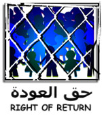
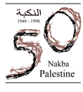

What's new ? will present you quickly with the latest updates, so that you in a few moments see the changes. Also the purpose of this page is to update you on relating links. If anyone has suggestions send us an email at Hanthala Palestine or JOIN the Hanthala mailinglist. For recent information check the THE UNOFFICIAL NEWS. In the face of escalating efforts to deny and abrogate the legitimate rights of Palestinians to restitution and repatriation Hanthala Palestine joined the initiative of CPRR to call for all Palestinians and Palestinian organisations to join the collective campaign for the right of return and affirm that every Palestinian has a legitimate, individual right to absolute restitution of all their property and the right to return to their original home. Therefore, we call Palestinians, and friends and supporters of the Palestinians everywhere SIGN THE ONLINE PETITION FOR THE RIGHT TO RETURN.
The petition will be used to underline to all members of the international community that we believe that every Palestinian has a legitimate, individual right to absolute restitution of all their property and the right to return to their original home. Additionally, through this petition, Palestinians and their friends remind the whole world that such rights are inalienable and not subject to negotiation.
On January 10 2000, Hanthala Palestine released a call for local, regional and international NGOs that have consultative status in meetings of UN treaty bodies to convince member states in the General Assembly that they invite Palestine to accede to the international covenants on human rights. Read more about this at SELF-DETERMINATION AS A CRUCIAL PRINCIPLE OF HUMAN RIGHTS IN PALESTINE.
The last addition to this site is a report The Truth About Terrorism written by Ali Abunimah who examined the US State Department's own annual report, Patterns of Global Terrorism, 1998, which can be find under PLATFORM.
On October 28, 1999, Hanthala Palestine, in co-operation with other grassroots Palestinians and others, organised an appeal to call for the Lebanese hostages in Khiam to be released and for the Israeli detention and torture camp to be closed down once and for all. This action supported the efforts of people and groups around the world including Amnesty International and the Follow-Up Committee for the Support of the Lebanese Detainees in Israeli Prisons. Protests were scheduled worldwide including New York, Michigan, Montreal, Stockholm, Tel-Aviv, London, and Beirut.
To the ISSUES we added a section under the title PRISONERS. In this section we will guide you to various sources, backgrounds and factsheets about the current situation of Palestinian political prisoners, whether detained by Israel or by the Palestinian Authority.
This section has been one of the outcomes of our plans. We would like to ask specialists on this list. People who have a special interest in one of the topics or who are working in this field to contribute to this section. If you have any information, links, data, fact-sheets, etc. or if you want to help build this section to become a major resource please contact Hanthala Palestine (hanthala@usa.net).
After this, the most recent addition to this site is a section where we will offer information about the establishment of Hanthala. Additionally, here you can find information about Naji al-Ali and Hanthala, about Hanthala, a symbol of the Palestinian struggle, and My signature, Hanthala: The Symbol of the Child, a written article by Naji al-Ali himself, from which we derived our mandate. Also coming up, our guidelines and objectives for the future, with which we started this summer, based on continued discussions
with the beginning of Hanthala Palestine.
- Hanthala Palestine: The Network
- Hanthala Palestine: Initial Ideas
- My signature, Hanthala: The Symbol of the Child
- With his blood Naji al-Ali drew for Palestine
- Remembering the "conscience" of Palestine
- Frankly speaking: An interview with Ba'ha Bukhari, cartoonist of al-Quds
- An Ongoing Crisis of Confidence
- Naji Al Ali: Martyrdom for a patriotic artist
- Naji Al-Ali's charicatures historical witness
- A Day at the Checkpoint
- A Letter to Edward Said
Then, the most recent addition to this site is the Violations-site. From this site we will maintain an update of not only violations of universal Human Rights, but also against the aspirations of the Palestinian people and the Objectives of the Intifada. As the first is mainly related to justice, the latter also, but has a more political objective.
The last addition to this site will be the The Unofficial News site, with regularly updated news casts.
To be sure, always check theSite Map.
Links
- The Council for Palestinian Restitution and Reparation (CPRR)
- Across Borders Project: Connecting Palestinian refugees
- Dheisheh Refugee Camp
- Struggle in Palestine
- The Israeli Holocaust against the Palestinian People
- Ali Abunimah's Bitter Pill: Uncovering media myths about the Middle East
- Remember Deir Yassin
- September 1996 Memorial Web Site
- Qana '96
- Arab Internet Directory
- Arab World Online
- Academic Freedom First
- Al-Nakba
- Khalil Sakakini Center
- American Committee for Jerusalem
- Arab-American Anti-Discrimination Comittee
- The Alternative Information Center
- Birzeit University's Center for Research & Documentation
- Inaash al Usra Society
- The Institute for Palestine Studies (IPS)
- Palestine & the UN
- Shaml: Palestinian Diaspora & Refugee Center
- UNRWA
- Academic Freedom First
- Addameer
- Al-Haq
- The Alternative Information Center (AIC)
- The Association of 40
- BADIL Resource Center for Palestinian Residency & Refugee Rights
- B'Tselem
- Democracy and Workers' Rights Center
- Free Ahmad Qatamesh!
- Human Rights Action Project, Birzeit University
- LAW - The Palestinian Society for the Protection of Human Rights and the Environment
- The Mandela Institute
- Palestinian Human Rights Monitoring Group
- Palestinian Independent Commission for Citizen's Rights (PICCR)
- Women's Affairs Technical Committee (WATC)
- Freedom and Justice for Samar and Jawad
- Palestinian Center for Human Rights (PCHR)
- Amnesty International
- Human Rights Watch
- Human & Constitutional Rights Resources Page
- Human Rights Internet (HRI)
- Lawyers Committee for Human Rights
- United Nations Human Rights Page